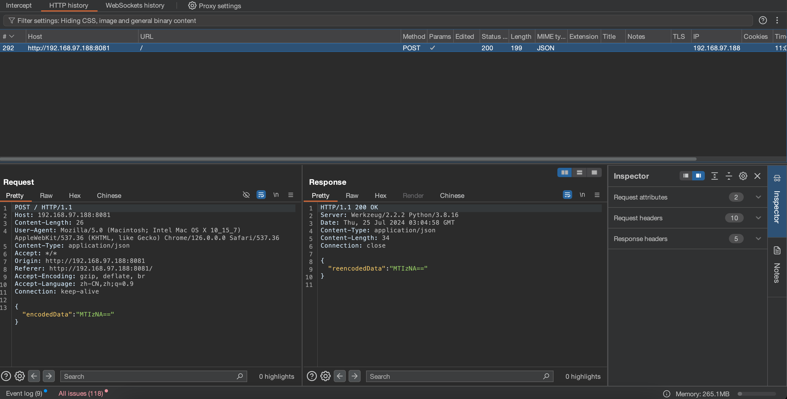
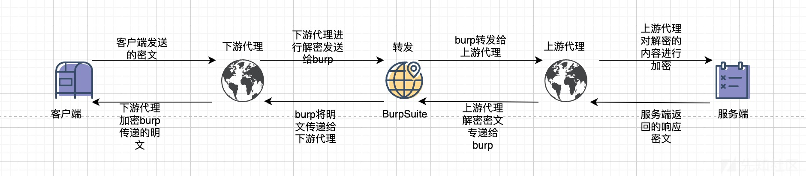
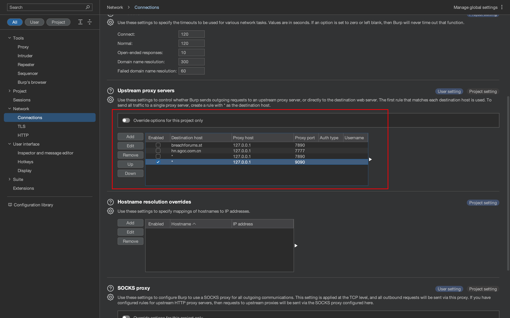
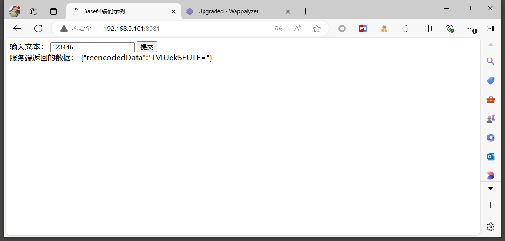
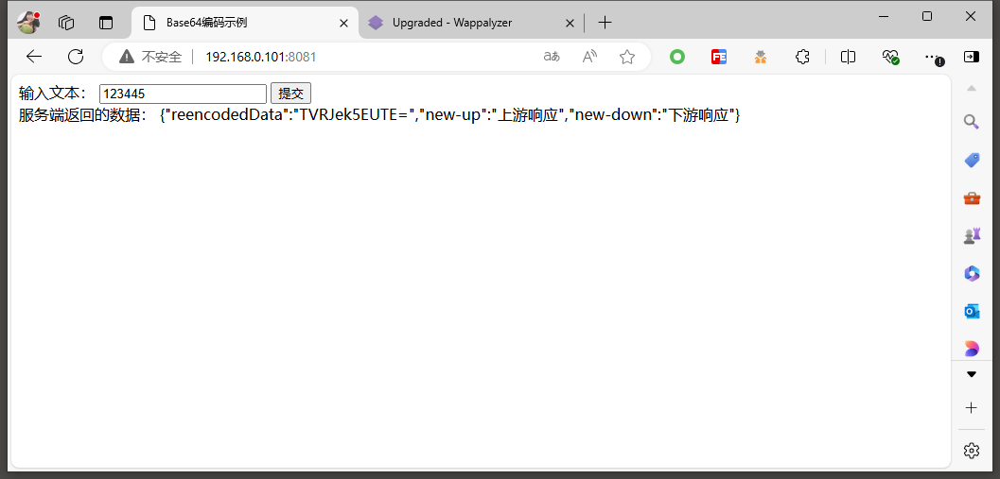
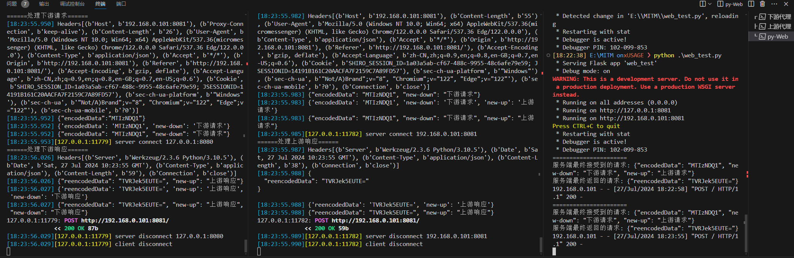
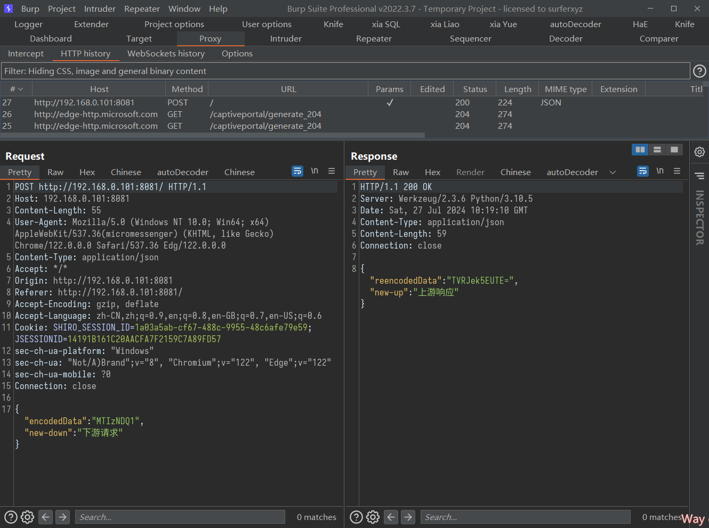

环境 先创建一个加解密的环境，这里我用python的flask搭建
1 2 3 4 5 6 7 8 9 10 11 12 13 14 15 16 17 18 19 20 21 22 23 24 25 26 27 28 29 30 31 32 33 34 35 36 37 38 39 40 41 42 43 44 45 46 47 48 49 50 51 52 53 54 55 56 57 58 59 60 61 62 63 64 65 66 67 68 69 70 71 72 73 74 75 76 77 78 79 80 81 82 83 84 85 86 from flask import Flask, request, jsonify, render_template_string import base64 import json app = Flask(__name__) @app.route('/', methods=['GET', 'POST']) def index(): if request.method == 'POST': if request.is_json: postData = request.get_json() print("======================") print("服务端最终接受到的请求:",json.dumps(postData,ensure_ascii=False)) if 'encodedData' in postData: encodedData = postData['encodedData'] if encodedData.endswith('='): decodedData = base64.b64decode(encodedData).decode() decodedData = base64.b64encode(decodedData.encode()).decode() else: decodedData = base64.b64encode(encodedData.encode()).decode() response = {'reencodedData': decodedData} print("服务端最终返回的请求:",json.dumps(response,ensure_ascii=False)) return jsonify(response) else: errorResponse = {'error': 'Invalid data received'} return jsonify(errorResponse), 400 else: return jsonify({'error': 'Request must be in JSON format'}), 400 return render_template_string(''' <!DOCTYPE html> <html lang="en"> <head> <meta charset="UTF-8"> <meta name="viewport" content="width=device-width, initial-scale=1.0"> <title>Base64编码示例</title> </head> <body> <form id="myForm"> <label for="userInput">输入文本：</label> <input type="text" id="userInput" name="userInput" required> <button type="button" onclick="encodeAndSend()">提交</button> </form> <!-- 添加用于显示服务端返回的数据的元素 --> <div id="responseDataContainer"></div> <script> function encodeAndSend() { var userInput = document.getElementById("userInput").value; var encodedData = btoa(userInput); var jsonData = { encodedData: encodedData }; fetch('/', { method: 'POST', headers: { 'Content-Type': 'application/json' }, body: JSON.stringify(jsonData) }) .then(response => response.json()) .then(data => { var responseDataContainer = document.getElementById("responseDataContainer"); responseDataContainer.innerHTML = '服务端返回的数据： ' + JSON.stringify(data); }) .catch(error => { console.error('Error:', error); }); } </script> </body> </html> ''') if __name__ == '__main__': app.run(host="0.0.0.0",port="8081",debug=True)
运行，抓包如下：

MITM脚本 整体流程大概如此，需要运行两个MITM脚本，分别处理上游代理和下游代理

这里我设置
MITM下游代理为：127.0.0.1:7070
bp代理代理为：127.0.0.1:8080
MITM上游代理为：127.0.0.1:9090
下游代理脚本：MITM-downstream.py
1 2 3 4 5 6 7 8 9 10 11 12 13 14 15 16 17 18 19 20 21 22 23 24 25 26 27 28 29 30 31 32 33 34 35 36 37 38 39 40 41 42 43 44 45 46 47 48 49 50 51 52 53 54 from mitmproxy import flowfilter,ctx from mitmproxy.http import HTTPFlow from mitmproxy import flowfilter from mitmproxy.http import HTTPFlow import base64 import json import time class Mimit(): def request(self,flow): print("======处理下游请求======") # 获取请求头 header req_header = flow.request.headers ctx.log.info(req_header) # 获取请求体 body req = flow.request.get_text() ctx.log.info(req) # 修改请求头 req_json = json.loads(req) req_json['new-down'] = "下游请求" ctx.log.info(req_json) # 处理json.dumps中文问题 ensure_ascii=False new_req_str = json.dumps(req_json,ensure_ascii=False) ctx.log.info(new_req_str) # 设置修改过后的请求体 flow.request.set_text(new_req_str) def response(self,flow): print("======处理下游响应======") # 获取请求头 header rep_header = flow.response.headers ctx.log.info(rep_header) # 获取请求体 body rep = flow.response.get_text() ctx.log.info(rep) # 修改请求头 rep_json = json.loads(rep) rep_json['new-down'] = "下游响应" ctx.log.info(rep_json) # 处理json.dumps中文问题 ensure_ascii=False new_rep_str = json.dumps(rep_json,ensure_ascii=False) ctx.log.info(new_rep_str) # 设置修改过后的请求体 flow.response.set_text(new_rep_str) addons = [Mimit(),]
执行命令：mitmdump -p 7070 -s MITM-downstream.py –mode upstream:http://127.0.0.1:8080 –ssl-insecure
然后bp中设置bp的上游代理：

上游代理脚本：MITM-upstream.py
1 2 3 4 5 6 7 8 9 10 11 12 13 14 15 16 17 18 19 20 21 22 23 24 25 26 27 28 29 30 31 32 33 34 35 36 37 38 39 40 41 42 43 44 45 46 47 48 49 50 51 52 53 54 55 from mitmproxy import flowfilter,ctx from mitmproxy.http import HTTPFlow from mitmproxy import flowfilter from mitmproxy.http import HTTPFlow import base64 import json class Mimit(): def request(self,flow): print("======处理上游请求======") # 获取请求头 header req_header = flow.request.headers ctx.log.info(req_header) # 获取请求体 body req = flow.request.get_text() ctx.log.info(req) # 修改请求头 req_json = json.loads(req) req_json['new-up'] = "上游请求" ctx.log.info(req_json) # 处理json.dumps中文问题 ensure_ascii=False new_req_str = json.dumps(req_json,ensure_ascii=False) ctx.log.info(new_req_str) # 设置修改过后的请求体 flow.request.set_text(new_req_str) def response(self,flow): print("======处理上游响应======") # 获取请求头 header rep_header = flow.response.headers ctx.log.info(rep_header) # 获取请求体 body rep = flow.response.get_text() ctx.log.info(rep) # 修改请求头 rep_json = json.loads(rep) rep_json['new-up'] = "上游响应" ctx.log.info(rep_json) # 处理json.dumps中文问题 ensure_ascii=False new_rep_str = json.dumps(rep_json,ensure_ascii=False) ctx.log.info(new_rep_str) # 设置修改过后的请求体 flow.response.set_text(new_rep_str) addons = [Mimit(),]
执行命令：mitmdump -p 9090 -s MITM-upstream.py –ssl-insecure
最后的执行效果如下：
浏览器默认效果：

开启MITM加解密后：

而服务器接受的数据以及MITM两层代理中的数据为：

Bp中显示的效果如下：

假设有一个web系统，请求和响应全加密。借助这套MITM可以达到：
浏览器 - Burp： 下游代理 request() bp明文显示浏览器发送的加密过的请求
Burp - 服务器： 上游代理 request() bp修改后，重新加密发给服务器，以便服务器正常响应
服务器 - Burp： 上游代理 reponse() bp明文显示服务器返回的加密过的响应
Burp - 浏览器： 下游代理 reponse() 重新加密返回给浏览器，以便浏览器显示正常
再把流程图贴一下：
优化代码 优化一下代码，方便写加解密过程：
参考 Mitmproxy/mitmdump中文文档以及配置教程：https://www.cnblogs.com/yoyo1216/p/16165758.html
Mitmdump 和 Burp Suite整合详解：https://xz.aliyun.com/t/13218?time__1311=GqmxuD070%3Do05Rx%2BOrmwK0KqY5kWbD#toc-5